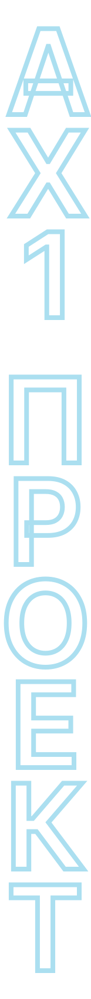
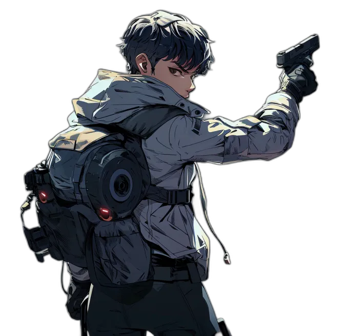
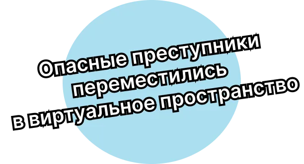

2023 ДЕК  Киборг-гибрид,
стоящий во главе
элитного
подразделения
полиции, идет
по следу хакера /imagine prompt
Девушка уверенно держит
пистолет руками, целится
c решительным
выражением лица,
вдохновлен призраком
в доспехах
и эстетикой старого аниме  